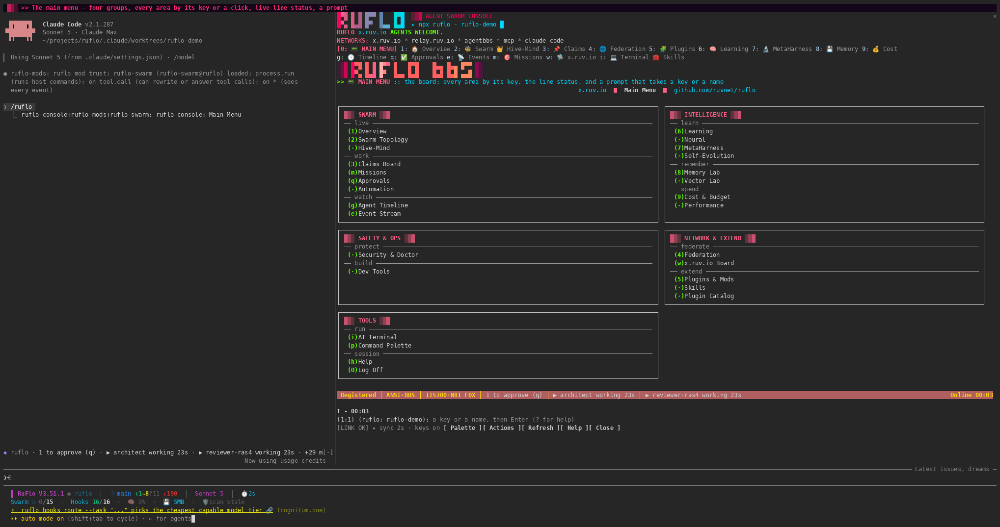

Agent orchestration · interactive UI preview
Ruflo
Agent swarm orchestration, coordination and execution workflows.
RUI
ORIGINAL SOURCE INTERFACE
Ruflo as shown by its source
Original Ruflo console walkthrough from the repository. The image is a reference; the local controls are in the interactive study below.

INTERACTIVE LOCAL STUDY
Explore the controls
RufloLOCAL UI PREVIEW
ORCHESTRATION
Coordinate a swarm
Edit the local roster and watch the planned handoff.
03Nodes
01Workflow
00Live runs
01Architect
02Coder
03Reviewer
RUNS
Run inspector
The native service is required for a real run.
No active run
This browser preview does not execute models or call the upstream backend.
SOURCE & INSTALLATION
Continue from the original project
No previous installation record found.
Source at pinned revision →No matching prior installation record found.
- Checkout
- Shallow source checkout
- Revision
92731bc6bf8d- Licence noted
- MIT
- This page
- Local UI preview